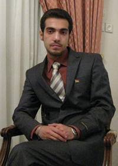

|
|
برگزاری نخستین جلسهی دادگاه کاوه قاسمی کرمانشاهی روزنامه نگارو فعال حقوق بشر و کمپین
چهار شنبه28 مهر 1389

تغییر برای برابری - نخستین جلسهی دادگاه کاوه قاسمی کرمانشاهی، روزنامه نگار، فعال حقوق بشر و از اعضای کمپین یک میلیون امضاء برای تغییر قوانین تبعیض آمیز صبح امروز (28 مهر 1389) در شعبهی اول دادگاه انقلاب کرمانشاه برگزار شد.
در این جلسه، اتهامات تبلیغ علیه نظام و اقدام علیه امنیت ملی به این فعال کُرد تفهیم گردید و مصطفی احمدیان وکیل وی با رد اتهامات وارد شده، به دفاع از موکل خود پرداخت. در پایان، قاضی با استماع دفاع اولیهی وکیل و متهم، جلسهی دادگاه را برای بررسی و تحقیقات بیشتر تجدید نمود.
کاوه کرمانشاهی 14 بهمن سال گذشته در کرمانشاه بازداشت و پس از گذراندن 110 روز حبس موقت در بازداشتگاه اداره اطلاعات که 80 روز آن در سلول انفرادی بوده است، دوم خرداد ماه سال جاری با قرار وثیقهی 100 میلیون تومانی آزاد شد.